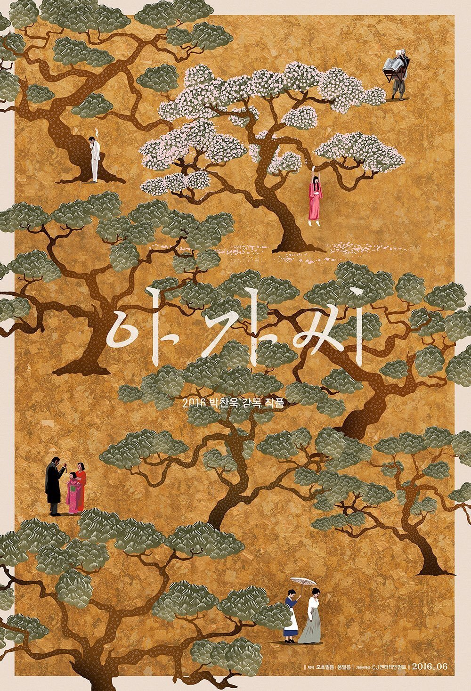
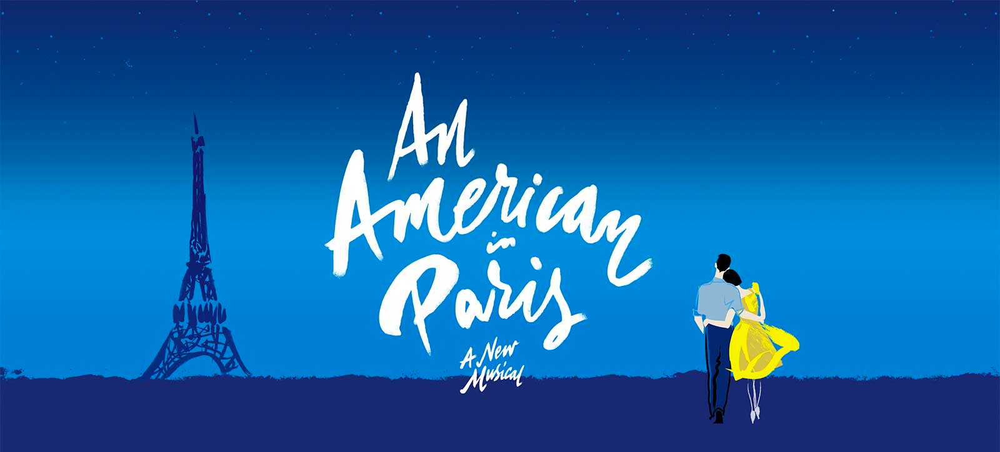

完美的一周

文章目录
没想到，来Boston四年多了，我竟第一次感受到*生活*在Boston的感觉。
第一年，是生活在Brandeis；第二年，是生活在美国的孤独中；第三年，是生活在友人舒服的家中；第四年，是生活在New England；也许是因为住在远郊，也许是囿于生活圈子，直到今天，才有了生活在Boston的实感。
太美妙，以至于我竟难以平复这种无尽的充实感带来的兴奋情绪，不得不写这么一篇流水账来记录这一周，以免其消弭于我因晚睡而惨遭损毁的海马体中。
万圣节
周一，和室友与美国小伙伴们一起驱车Salem，又一次感受纯正的万圣节气氛。
被拖车
周三，停在最合规矩的Gosman parking lot的我的车因学校通知不到位（仅在一周之前邮件告知）而惨遭拖走。搬砖至凌晨一点半的我因此体会到学校两点下自习的学霸们在校车上的愉悦歌声。
话剧
She kills monsters
周四，看了UTC排的话剧She kills monsters. 这部剧意外地有趣啊，讲的是妹妹与父母在车祸过世后，姐姐通过玩妹妹所构写DnD版本而尝试对妹妹内心进行探索并以此进行创伤后修复的故事。DnD游戏世界的具象化带来了十分有趣的舞台感，而现实、游戏、回忆虚实交错，让人同时走入了姐姐与妹妹的内心。当然UTC因为只是本科生社团，排的剧一如既往的简陋，但这部剧确实很适合年轻人来演。
古琴
周五，去聆听了于水山教授带来的古琴讲演沙龙。题目很美，是鹤舞鸿宾，取自古琴中脱离技巧而存在的意象“风惊鹤舞”与“宾鸿衔芦”。讲得很好，通过很多实例来让我们对记谱、打谱、律调（按于教授解读则为均调）有了概念，展示了梅庵派与他派的区别，也诚恳地和我们谈了他自己的理解，颇长我这古琴外行的见识。弹得很好，颇有意蕴。人也很好，有着文人的操守，希望他能得偿所愿，在古琴弹奏上有所成就。不过这场沙龙不能算完美，音响和聒噪的主持人差一点毁了所有的气氛。
电影
驴得水
周六，先去看了开心麻花的新片《驴得水》。说实话，一开始看到这部电影是开心麻花出品的时候，我是拒绝的。因为我非常反感以及讨厌他们出的第一部电影《夏洛特烦恼》，这部反女权的闹剧让我几乎成了他家的骨灰黑。然而当看到这部新片受到无数赞誉的时候，我禁不住还是去了电影院。意外地好看。一部将知识分子遮羞布撕的粉碎的力作。知识分子的天真软弱在现实面前不堪一击，或是成为祭品，或是转化成懦弱、贪婪与卑鄙的机会主义者。佳佳的远走看似美好，但片尾那一张张美好的老照片，残酷地揭示了现时的孙佳，无非是当时的他们罢了。走出象牙塔之前，又有哪个知识分子不曾有那样的理想与热情呢？悲剧是将人生有价值的东西毁灭给人看，而喜剧都有一个悲的内核，从这个角度看，《驴得水》确实是一部合格的喜剧。
小姐 아가씨

周六，接着看了心心念念已久的朴赞郁的《小姐》。当知道朴赞郁要改编*Fingersmith*的时候，我就将这部电影加入了必看清单之上了。后来哪怕陆续出了高清片源与蓝光片源，看到了众人的讨论，我都强忍着，只为在电影院一睹究竟。事实证明这个等待是值得的。剧情结构不必多谈，虽然有所改编，但大体走向与原著无二，只是更符合日韩背景。然而虽然以*Fingersmith*为骨，本片却将日韩情色片闷骚变态（中性词）的肉欲皮相与亚洲人独特的精巧气质表现得淋漓尽致。在电影院中，借着大屏幕，所有元素更是被放大，似氤氲的雪茄烟气一般充斥五感，给人无比美妙的观影体验。不过由于巴别塔的损毁，这部电影日语韩语混杂的原声与英文字幕与颇占篇幅的对中外色情小说的日译使我在观看的时候极度分裂，可能需要再看一遍中文字幕版来将碎片化的人格归整。
交响乐
136th Season Week 6
周六，还去听了BSO的交响乐。这次是Thomas Ades排的。由于是学生票，位置。。非常靠前，大概是第四排中间。好处是对于指挥和前排的各式提琴的动作看得非常清楚，《死亡之舞》中男中音女高音的面部表情也看得一清二楚；坏处是由于太近声音不是特别好，也不能纵览全局。我几乎是刚来Boston就知道BSO有便宜的学生票卖，却由于进城麻烦又需要周一一大早去拿票的缘故，拖到现在才去一睹究竟。坐进大厅的时候无限的悔恨就朝我涌来，其实说是车位难找，但这样的演出确实是值得我花这些功夫的。幸好还有这一季。
音乐剧
花都艳舞 An American in Paris

周日，去看了音乐剧*An American in Paris*。由于买的是cash only的student rush，而我们身上又没带够钱，只买到二楼Balcony的票，如在飞机上俯瞰大地一般，只能看清大致的动作，连三个男主，我都只能通过衣着和身形来进行区分。不过这部剧形式上还蛮有意思的，是芭蕾形式的音乐剧，串场设计很有趣，有一段刷得一下布料移开售货小姐便都换上裙装翩翩起舞的场面让我尤其印象深刻。舞台的灯光效果也很不错，按大姐的说法就是蓝紫灯光自带柔化效果。减分点则是老套的三男追女玛丽苏剧情，还不如中场时的大姐的桃色花边有趣。
文章作者 ziyunch
上次更新 2016-11-06